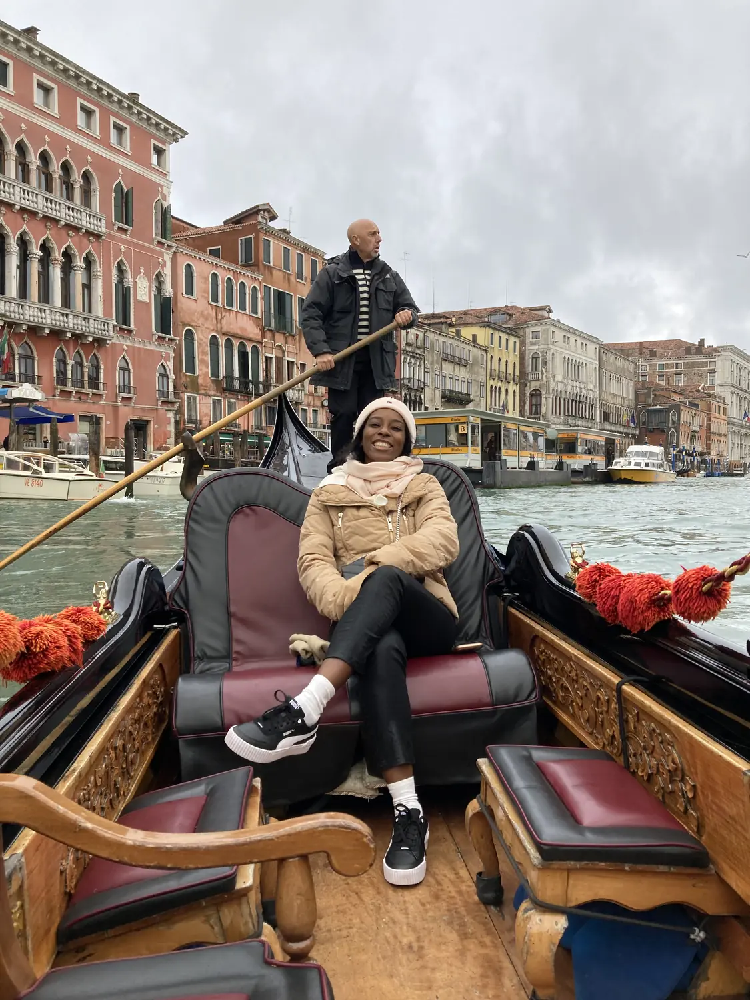
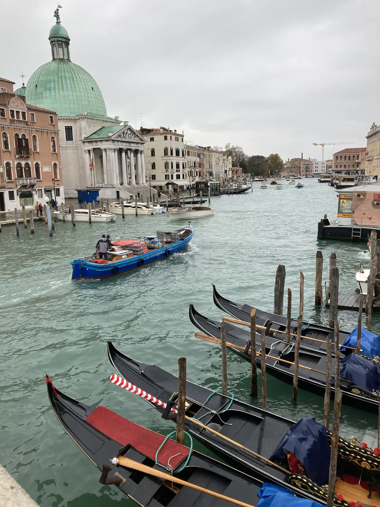
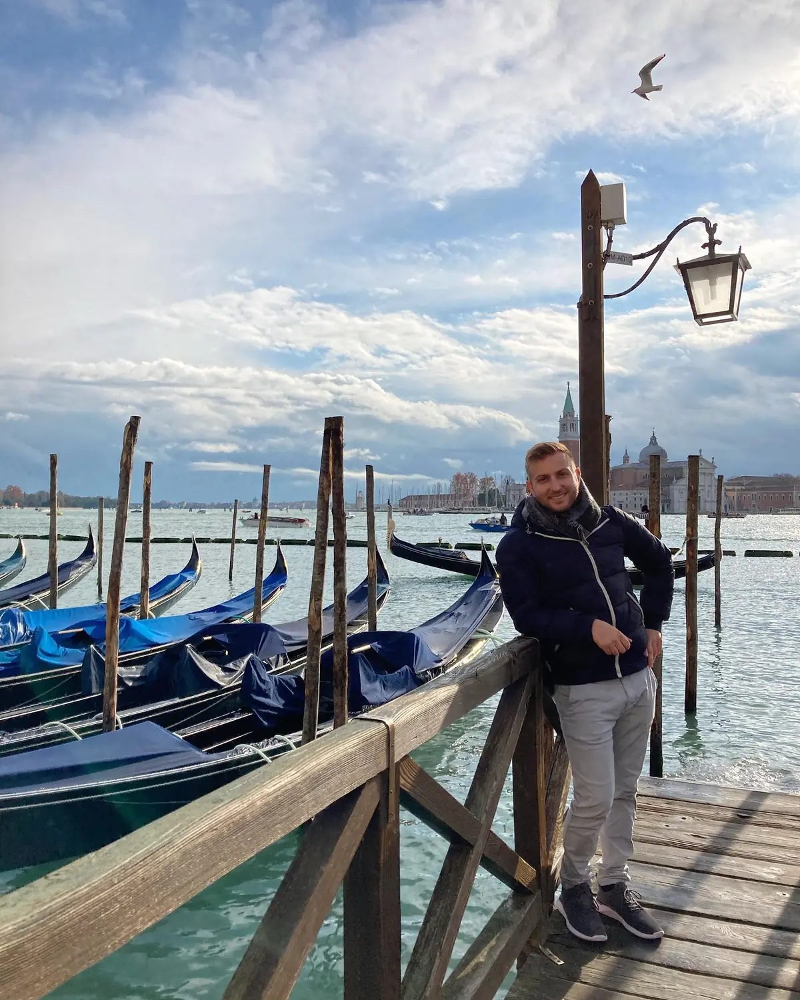

The classic01
The Grand Canal & a gondola ride
📍 Grand Canal, Venice
Cheesy? Maybe. Worth it? Absolutely. A gondola ride is the quintessential Venice experience, and drifting through the quiet back canals and out onto the sweeping Grand Canal — past centuries-old palazzi and under stone bridges — is genuinely magical. If you'd rather stay dry, the public vaporetto water-buses run the whole Grand Canal for a few euros and give you much the same views.
Unmissable in VeniceGo at golden hour
GetYourGuide
We'd recommend